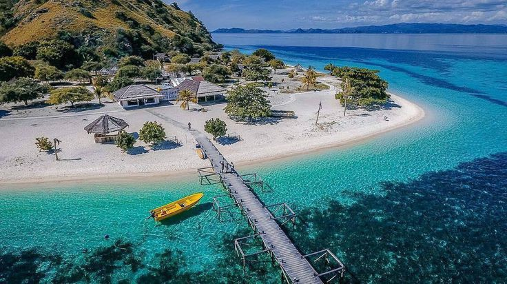

Wisata Jepara terkenal akan keindahan pemandangan alamnya. Mulai dari hutan, bukit, hingga pantai. Semuanya akan terlihat sangat cantik saat dikunjungi. Jepara sendiri adalah salah satu kota yang letaknya berada di Jawa Tengah.
Inilah 3 Rekomendasi Tempat Wisata Yang Populer Di Jepara
Karimun Jawa

Karimunjawa adalah kepulauan di Laut Jawa yang termasuk dalam Kabupaten Jepara, Jawa Tengah. Dengan luas daratan ±1.500 hektare dan perairan ±110.000 hektare, Karimunjawa kini dikembangkan menjadi pesona wisata Taman Laut yang mulai banyak digemari wisatawan lokal maupun mancanegara.Menurut legenda lokal, Karimunjawa ditemukan oleh Sunan Nyamplungan. Kala itu, Sunan Muria memerintahkan Amir Hasan ke sebuah pulau yang terlihat kremun-kremun (kabur) dari puncak Gunung Muria untuk mengembangkan ilmu agamanya. Karena terlihat kremun-kremun, akhirnya pulaunya dinamai "Karimunjawa" hingga kini. Amir Hasan kelak dikenal sebagai Sunan Nyamplungan karena menanam tanaman Nyamplung disana, yang ternyata bermanfaat sebagai pemecah angin.
Sejak tanggal 15 Maret 2001, Karimunjawa ditetapkan oleh pemerintah Jepara sebagai Taman Nasional. Karimunjawa adalah rumah bagi terumbu karang, hutan bakau, hutan pantai, serta hampir 400 spesies fauna laut, di antaranya 242 jenis ikan hias. Beberapa fauna langka yang berhabitat disini adalah Elang Laut Dada Putih, penyu sisik, dan penyu hijau. Tumbuhan yang menjadi ciri khas Taman Nasional Karimunjawa yaitu dewadaru (Crystocalyx macrophyla) yang terdapat pada hutan hujan dataran rendah.
Ombak di Karimunjawa tergolong rendah dan jinak, dibatasi oleh pantai yang kebanyakan adalah pantai pasir putih halus.
Pemesanan Tiket Wisata
IDR.70.000
Note : (Transaksi pembayaran akan dikirim admin lewat Gmail)
Pulau Panjang
Pulau Panjang adalah pulau kecil yang berjarak 2.4 km dari Pantai Kartini, Kabupaten Jepara. Pulau ini memiliki sebuah mercusuar yang terletak di bagian barat dan tempat berpopulasi seperti dermaga dan masjid terletak di bagian timur, sementara bagian tengahnya adalah hutan tropis.
Pulau Panjang memiliki pantai dengan pasir putih. Vegetasi di kawasan pantai Pulau Panjang ditumbuhi tanaman berupa bakau, pinus, randu, pandang, putri malu, waru laut dan kangkung laut. Kawasan pantai di sisi timur Pulau Panjang memiliki kemiringan yang terjal. Sedangkan kawasan pantai di sisi selatan Pulau Panjang memiliki kemiringan yang landai.
Pemesanan Tiket Wisata
IDR.50.000
Note : (Transaksi pembayaran akan dikirim admin lewat Gmail)
Pantai Kartini
Pantai Kartini adalah objek wisata pantai di Desa Bulu, Jepara, Jawa Tengah. Pantai ini terletak 2,5 km arah barat dari pendopo Kantor Bupati Jepara. Kawasan dengan luas lahan 3,5 ha ini merupakan kawasan yang strategis karena sebagai jalur transportasi laut menuju objek wisata Taman laut Nasional Karimunjawa dan Pulau Panjang. Selain itu, Pantai Kartini, tidak bisa lepas dari suatu acara tradisional yang disebut “Lomban”. Acara ini merupakan acara budaya masyarakat Jepara yang berlangsung selama 1 hari tepatnya pada tanggal 8 Syawal atau seminggu setelah Hari Raya Idul Fitri. Pantai Kartini disebut juga "pemandian" yang terletak di bagian barat Pantai Kartini karena pada awalnya digunakan sebagai pemandian yang dipercayai masyarakat dapat menyembuhkan penyakit rematik, dan gatal-gatal.
Pemesanan Tiket Wisata
IDR.25.000
Note : (Transaksi pembayaran akan dikirim admin lewat Gmail)